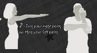

1995 / Deus ex-machina
por Casa 30 anos em 28 de novembro de 2017
1995 / A retomada
1995 marca a retomada do cinema brasileiro, com filmes como "Carlota Joaquina", "Terra estrangeira" e "O quatrilho". A internet chega ao Brasil e a Microsoft lança o Windows 95. O site de pesquisas online Yahoo é lançado, e os cineastas dinamarqueses Thomas Vinterberg e Lars von Trier lançam o Dogma 95. O Grêmio de Felipão ganha o bi da Libertadores. Termina a guerra da Bósnia, com a Iugoslávia dividida, por enquanto, em três países. Bem antes da Al-Qaeda, um fundamentalista norte-americano explode um prédio público em Oklahoma City, matando 168 pessoas. Em Israel, outro fundamentalista mata o Primeiro Ministro Yitzhak Rabin.
|  | Na música, Dave Grohl funda o Foo Fighters, os Mamonas Assassinas alcançam o topo das paradas nacionais, disputando o espaço com uma onda de hits do Axé Music, e a dupla espanhola Los del Rio lança a canção "Macarena", que conta a história de uma moça infiel e seu namorado e foi eleita pela revista Rolling Stone a segunda mais irritante música da história. |
Na Casa de Cinema realizamos um curso de roteiros e rodamos nossa primeira co-produção (que na época ainda tinha hífen), "Felicidade é", que contava com quatro histórias: "Sonho", dirigida por José Pedro Goulart, "Bolo", de José Roberto Torero, "Cruz", de Cecílio Neto e "Estrada", dirigido por Jorge Furtado.
Também produzimos "Deus ex-machina", de Carlos Gerbase, até hoje o curta que ganhou o maior número de prêmios no Festival de Gramado. Com Luciene Adami, Leverdógil de Freitas, Werner Schünemann e Daniela Schmitz no elenco, o filme conta uma história de mentiras, de pistas falsas e de motivações obscuras, em que quatro personagens de moral duvidosa tentam parecer honestos uns para os outros. Ê, Macarena!
*****
1995 / Deus ex-machina (25 min)
Direção: Carlos Gerbase
Produção Executiva: Luciana Tomasi e Nora Goulart
Roteiro: Carlos Gerbase
Direção de Fotografia: Alex Sernambi
Direção de Arte: Fiapo Barth
Música: Ricardo Severo
Direção de Produção: Daniela Dall'Agnol
Montagem: Giba Assis Brasil
Assistente de Direção: Gustavo Fernández
Elenco Principal: Luciene Adami, Leverdógil de Freitas, Werner Schünemann, Daniela Schmitz
Disponível de 28/nov a 04/dez
Legendas em inglês, espanhol, francês e português
**********
MOSTRA CASA DE CINEMA: 30 ANOS, 30 FILMES
1987 / O dia em que Dorival encarou a guarda
1988 / Barbosa
1989 / Ilha das flores (disponível até 28/nov)
1990 / Memória (disponível até 29/nov)
1991a / O vampiro de Novo Hamburgo (disponível até 30/nov)
1991b / Dona Sílvia não gostava de música (disponível até 30/nov)
1991c / Tempo (disponível até 30/nov)
1992 / Esta não é a sua vida (disponível até 01/dez)
1993 / Ventre livre (disponível até 02/dez)
1994 / A matadeira (disponível até 03/dez)
1995 / Deus ex-machina (disponível até 04/dez)